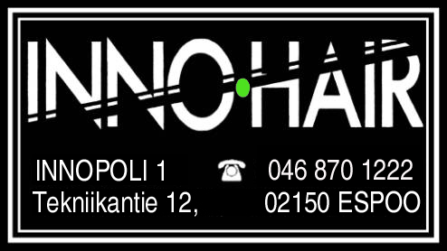
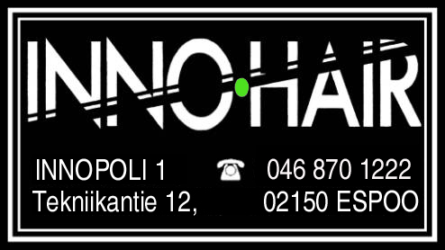

Otaniemen jäynäkilpailun säännöt
I Jäynistä ja jäynäkilpailusta1 § Jäynäkilpailun tarkoituksena on vaalia jäynäperinteitä, edistää teekkarikulttuuria sekä kohottaa teekkarihenkeä.
2 § Kilpailussa on tarkoituksena suorittaa mahdollisimman hauskoja, ajankohtaisia, huomiota herättäviä, teekkariperinteitä vaalivia sekä teekkarikulttuuria myönteisessä mielessä esiin tuovia jäyniä.
Jäynän tarkoituksena on tuottaa hyväntahtoisesti riemua itselle, jäynän kohteelle ja suurelle yleisölle. Jäynä ei tosimielellä ota kantaa uskontoon tai politiikkaan. Se on luonteeltaan yllätyksellinen ja tekniikan keinoja hyväksikäyttävä. Jäynä voi olla kestoltaan lyhyt tai pitkä.
Jäynä ei solvaa, rienaa, turmele, varasta tai tuhoa. Jäynä ei aiheuta kenellekään taloudellista, henkistä tai ruumiillista haittaa. Jäynä ei saa kohdistua millään muotoa poliisi- tai pelastusviranomaisiin eikä ylituomariston jäseniin.
II Kilpailusuoritus3 § Kilpailuaikana suoritetut jäynät voivat osallistua käynnissä olevaan kilpailuun, jonka voittajia kutsutaan arvonimellä "Otaniemen teekkarijäynääjä". Voittajat saavat Otaniemen teekkareiden edustusoikeuden seuraavassa valtakunnallisessa jäynäkilpailussa. Mikäli voittajat eivät ole halukkaita osallistumaan valtakunnalliseen jäynäkilpailuun, ylituomaristo nimeää sinne joukkueen.
4 § Kilpailusuoritus koostuu vähintään yhdestä (1) jäynästä.
III Joukkueet ja ylituomaristo5 § Joukkueen koko on vähintään yksi (1) jäynääjä. Joukkueen jäsenistä vähintään puolen tulee olla Teknillisen Korkeakoulun Ylioppilaskunnan (TKY) jäseniä.
Halutessaan joukkue voi osallistua jäynäkilpailuun nimimerkillä, mutta jäynääjien todellinen henkilöllisyys on ilmoitettava ylituomaristolle.
6 § Kilpailuun osallistuvat kaikki jäynäjulistuksessa annettujen ohjeiden mukaisesti ilmoittautuneet joukkueet.
7 § Osallistujat vastaavat itse kaikesta toiminnastaan kilpailun aikana.
8 § Kilpailun kulkua ohjaa ja valvoo korkea-arvoisa ylituomaristo. Ylituomariston kokoonpano on kolme (3) TKY:n hallituksen ja kolme (3) Jämerän Toiminnan Killan (JTK) hallituksen nimeämää jäsentä, joista yksi (1) toimii ylituomariston puheenjohtajana.
Ylituomariston jäsenet nimetään ennen jäynäjulistuksen antamista ja heidän toimikautensa kestää jäynäkilpailun palkintojenjakoon saakka. Tarvittaessa sekä TKY että JTK voivat vaihtaa edustajiaan ylituomaristossa jäynäkilpailun aikana.
Ylituomaristoon voi kuulua myös kunniaylituomari. Kunniaylituomari on ylituomariston täysivaltainen jäsen, jonka ylituomaristo kutsuu jäsenekseen.
Kunniaylituomarin toimikausi kestää käynnissäolevan jäynäkilpailun loppuun.
IV Aika ja paikka9 § Jäynäkilpailun päättymisajankohta määritellään jäynäjulistuksessa.
10 § Seuraava jäynäkilpailu alkaa välittömästi edellisen päätyttyä.
11 § Kilpailualueena on Otaniemen maa-, ilma- ja vesialueet sekä muu tunnettu maailma. Muuallakin suoritetut jäynät voidaan hyväksyä kilpailuun.
V Arvostelu ja tulosten julkistaminen12 § Kilpailun arvostelussa kiinnitetään huomiota erityisesti pykälässä 2 mainittuihin seikkoihin. Joukkueiden tulee kiinnittää erityistä huomiota tekemiensä jäynien todennettavuuteen. Tämä voi tapahtua joko suullisesti, kirjallisesti, monumentaalisesti, visuaalisesti, magneettisesti tai muutoin saattamalla tehdyt jäynät ylituomariston tietoisuuteen arvostelutilaisuudessa.
Kaikki edellä mainitut todisteet tulee saattaa ylituomariston tietoisuuteen viimeistään kahdenkymmenenneljän (24) tunnin kuluessa kilpailuajan päättymisestä. Ylituomariston jäsenen voi myös tarvittaessa pyytää todentamaan jäynän toteutuksen paikan päälle.
13 § Ylituomaristo julkistaa kilpailun tulokset jäynäjulistuksessa ilmoitettuna ajankohtana, erikseen ilmoitetussa paikassa.
VI Muita määräyksiä14 § Muilta osin jäynäkilpailun yksityiskohdat määrittelee ylituomaristo jäynäjulistuksessaan.
15 § Näiden sääntöjen lisäksi on noudatettava EU:n lainsäädäntöä, Suomen Lakia, kyseessä olevan paikkakunnan järjestyssääntöä sekä hyviä tapoja. Jäynän tapahtuessa Suomen rajojen ulkopuolella on noudatettava kyseisen tapahtumapaikan lakeja ja sääntöjä.
16 § Näitä sääntöjä tulkitsee kilpailun ylituomaristo.
Hyväksytty TKYH:n kokouksessa 04/03 
